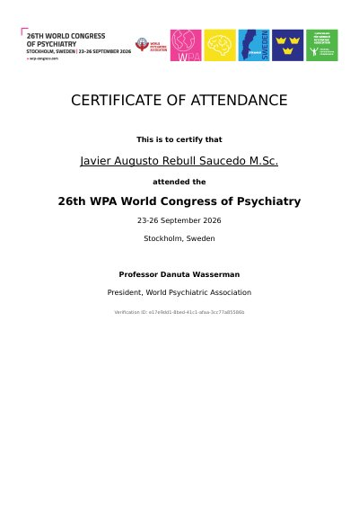

ePoster
26th WPA World Congress of Psychiatry
23–26 September 2026 · Stockholm, Sweden
“Population-level prediction of depression, Alzheimer’s disease, and Parkinson’s disease incidence using artificial intelligence: implications for health service planning”
Tecnológico de Monterrey · Instituto Nacional de Psiquiatría Ramón de la Fuente Muñiz · Instituto Nacional de Salud Pública · Instituto Mexicano del Seguro Social
- Programme
- ePoster EV0467 · abstract ID 3134 · session AS17 Digital Psychiatry · presenter: Javier Augusto Rebull Saucedo
- Document
- Certificate of Attendance. The certificate records attendance; the presenter role is recorded in the congress app, where the ePosters were published (the public web programme does not list them).
- Issued by
- World Psychiatric Association. Signed by Professor Danuta Wasserman, President
- Verification
- Verification ID
e17e9dd1-8bed-41c1-afaa-3cc77a85586b· issued by the congress organiser, Kenes Group; no public lookup page - SHA-256
77b160d6b0d706f7aa79e491efe6095baf419ce07f128d27da6d710c3c4ee2d6